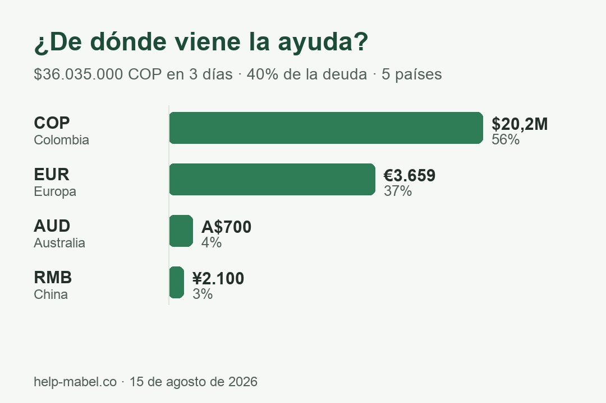

Ayudemos a Mabel Xiomara a empezar de nuevo
El terremoto del 10 de agosto dejó su casa en Circasia (Quindío) inhabitable. La casa se perdió — la deuda con el banco sigue. Eran dos créditos de libre inversión, no hipotecarios: ningún seguro cubre la casa.
 Compartir esta página
Compartir esta página
Lo que pasó
Hola — les escribe Natalia, prima de Mabel Xiomara, junto con familiares y amigos cercanos.
El 10 de agosto de 2026 a las 7:34 de la mañana, el terremoto de magnitud 7,4 que sacudió a Colombia dejó gravemente dañada la casa de Mabel Xiomara en el barrio La Pilastra de Circasia, Quindío. Ella vivía allí con sus tres hijos — Matías (14) y los gemelos Gabriel y Joel (10) — y su pareja, Arlex, el papá de los tres niños.
Es la casa que Mabel Xiomara construyó hace apenas dos años, con sus ahorros y dos créditos de libre inversión. La familia vivía en el segundo piso mientras terminaba de construir el primero. El terremoto partió columnas y muros de ese primer piso. Tras la visita técnica del Consejo Municipal de Gestión del Riesgo de Desastres, la Alcaldía notificó oficialmente a Mabel Xiomara que la vivienda fue declarada NO HABITABLE y tuvo que ser evacuada. No pueden volver — y la Alcaldía les notificó también que no pueden reconstruir en el mismo terreno. La familia tiene que empezar de nuevo en otro lugar.
Los créditos eran de libre inversión, sin seguro contra desastres. Mabel Xiomara debe seguir pagando $1.824.000 cada mes — por una casa en la que ya no puede vivir. La deuda pendiente: $89,4 millones de pesos, en dos créditos de aproximadamente $29 y $60 millones.
Hoy los cinco duermen en un solo cuarto, en la casa de la abuela.
Quién es Mabel Xiomara
Muchos de ustedes la conocen: desde hace más de diez años, cada diciembre, Mabel Xiomara reúne donaciones entre familiares y amigos para darles el aguinaldo a los niños con discapacidad de la fundación INFAC. Lleva más de una década pidiendo por otros. Ahora es nuestro turno de ayudarle a ella — a pagar la deuda que quedó bajo los escombros, para que pueda empezar de cero y construir, sin esa carga, un nuevo hogar para sus hijos.


Desliza para ver más fotos →
Cómo donar
Elige la opción según donde estés. En Colombia el dinero llega directamente a la familia (cuenta Bancolombia de Mabel Xiomara o Nequi de su hijo Matías); las donaciones por PayPal y Alipay las recibe su prima Natalia, quien transfiere todo lo recaudado a Mabel Xiomara y publica los comprobantes. Cualquier aporte suma; entre todos marcamos la diferencia.
🇨🇴 Colombia — Bancolombia · Bre-B · Nequi ›
06983944823
A nombre de Mabel Xiomara Moreno Vallejo · desde Bancolombia, Nequi o cualquier banco
@mabel065
Desde la app de cualquier banco (Bancolombia, Davivienda, Nu…) · llega a la cuenta Bancolombia de Mabel
305 405 3098
A nombre de Matías Bedoya Moreno, hijo de Mabel · desde la app Nequi
Verifica el nombre antes de confirmar: la cuenta Bancolombia y la llave Bre-B están a nombre de Mabel Xiomara Moreno Vallejo; el Nequi, a nombre de Matías Bedoya Moreno, su hijo. La cuenta Nequi de Mabel está temporalmente bloqueada (Nequi nos indica que hasta el 1 de septiembre); si intentaste enviar al Nequi de Mabel y no pasó, usa una de estas opciones. El dinero llega directo a la familia. Si tu banco te pide la cédula de la titular, escríbenos. Cada $456.000 cubre una semana de la cuota mensual; $1.824.000, el mes completo.
¿Ya donaste? ¡Mil gracias! 💚 Compartir esta página vale tanto como otra donación.
🌍 PayPal — desde cualquier país ›
Te llevará a la «vaca» de PayPal organizada por Natalia — verás su nombre como organizadora; es correcto.
Donar por PayPalPayPal acepta EUR, USD, GBP, AUD y más. PayPal no puede girar dinero a cuentas colombianas; por eso esta «vaca» la administra Natalia, prima de Mabel Xiomara: ella transfiere todo lo recaudado a la cuenta de Mabel Xiomara y publica los comprobantes aquí.
¿Ya donaste? ¡Mil gracias! 💚 Compartir esta página vale tanto como otra donación.
🇪🇺 Europa — Transferencia (EUR / SEPA) ›
Escanea el código con tu app bancaria europea — IBAN, titular y concepto se rellenan solos. Desde el celular: usa los botones de copiar.

Concepto: «Ayuda Mabel Xiomara» · La cuenta la administra Natalia, prima de Mabel Xiomara: ella transfiere todo a la cuenta de Mabel Xiomara y publica los comprobantes.
¿Ya donaste? ¡Mil gracias! 💚 Compartir esta página vale tanto como otra donación.
🇺🇸 EE. UU. — Transferencia (USD) ›
Transferencia local en USD (ACH o wire) vía Wise — sin comisiones de tarjeta. La recibe Natalia y transfiere todo a la cuenta de Mabel Xiomara, publicando los comprobantes.
Copiar routing number Copiar número de cuenta Copiar nombre de la titularBanco: Wise · Tipo de cuenta: Checking · Tu banco puede mostrar el nombre de la titular para confirmar — es correcto.
¿Ya donaste? ¡Mil gracias! 💚 Compartir esta página vale tanto como otra donación.
🇬🇧 Reino Unido — Transferencia (GBP) ›
Transferencia local en GBP vía Wise — sin comisiones de tarjeta. La recibe Natalia y transfiere todo a la cuenta de Mabel Xiomara, publicando los comprobantes.
Copiar sort code Copiar número de cuenta Copiar nombre de la titularBanco: Wise · Tu banco confirmará el nombre de la titular — es correcto.
¿Ya donaste? ¡Mil gracias! 💚 Compartir esta página vale tanto como otra donación.
🇦🇺 Australia — Transferencia (AUD) ›
Transferencia local en AUD vía Wise — sin comisiones de tarjeta. La recibe Natalia y transfiere todo a la cuenta de Mabel Xiomara, publicando los comprobantes.
Copiar BSB Copiar número de cuenta Copiar nombre de la titularBanco: Wise · Tu banco puede mostrar el nombre de la titular para confirmar — es correcto.
¿Ya donaste? ¡Mil gracias! 💚 Compartir esta página vale tanto como otra donación.
🇨🇳 China — Alipay（支付宝）›

¿Estás en China? Escanea el código con Alipay (toca para ampliar). Las donaciones las recibe Natalia, prima de Mabel Xiomara, quien vive en China — por eso puede recibirlas — y transfiere lo recaudado a Colombia, publicando los comprobantes en las actualizaciones.
Al escanear verás el nombre *NATALIA — si aparece otro nombre, no pagues.
¿Prefieres transferencia bancaria, WeChat u otra forma de enviar tu aporte? Escríbenos y te compartimos los datos.
Transparencia
- Las donaciones en Colombia llegan directamente a la familia — a la cuenta Bancolombia de Mabel Xiomara o al Nequi de su hijo Matías —, sin intermediarios.
- Las donaciones por PayPal, Alipay y transferencia bancaria las recibe Natalia (su prima, que vive en China), quien transfiere todo lo recaudado a Mabel Xiomara y publica los comprobantes en esta página.
- La deuda son dos créditos de libre inversión con cuotas de $608.000 y $1.216.000 al mes — $1.824.000 en total; saldo conjunto: $89,4 millones.
- ¿Por qué no responde un seguro? Porque son créditos de libre inversión, no hipotecarios: a diferencia de una hipoteca — que por ley incluye seguro de incendio y terremoto — un crédito de libre inversión no tiene ninguna cobertura sobre la casa. No hay seguro que activar.
- ¿Por qué una página propia y no GoFundMe? GoFundMe no puede girar dinero a Colombia y las plataformas cobran comisión — esta página la hizo la familia y no descuenta nada.
- Abajo puedes ver la notificación oficial del Consejo Municipal de Gestión del Riesgo de Desastres: vivienda no habitable — evacuación.
- Publicaremos actualizaciones con comprobantes de cada pago al banco.
- ¿Preguntas? Mostrar correo de contacto
 Notificación oficial del Consejo de Gestión del Riesgo
Notificación oficial del Consejo de Gestión del Riesgo"Vivienda no habitable — evacuación" · solo se cubren la cédula y la dirección · toca para ver
Actualizaciones
Nequi bloqueó temporalmente la cuenta de Mabel Xiomara — nos indican que hasta el 1 de septiembre. Lo que ya llegó a esa cuenta sigue ahí y está contado en el total, pero mientras tanto no puede recibir transferencias. Por eso, desde hoy, en Cómo donar encontrarás para Colombia la cuenta de ahorros Bancolombia de Mabel Xiomara (06983944823, la recomendada — también por Bre-B con su llave @mabel065 desde la app de cualquier banco) y el Nequi de su hijo Matías Bedoya Moreno (305 405 3098). Si intentaste enviar al Nequi de Mabel y no pasó, usa una de estas opciones. Cuando Nequi levante el bloqueo lo avisaremos aquí. Gracias por seguir compartiendo. 💚
Una semana después del terremoto, y en cinco días de campaña, reunimos $47.042.000 — el 52,6 % de la deuda. Personas en Colombia, Alemania, Australia, China y varios países más han donado, compartido y escrito. Mabel Xiomara, Arlex y los niños no tienen palabras — nosotros tampoco. Gracias de corazón.
Y ahora lo difícil: faltan $42,4 millones. El banco no espera — cada mes que pasa, la familia paga $1.824.000 por una casa que ya no existe. Los primeros días trajeron a los más cercanos; para llegar a la meta necesitamos llegar a personas que todavía no conocen la historia. Siguiente meta: los dos tercios de la deuda ($59,6 millones) — para esta meta faltan $12,6 millones (≈ €3.460).
Si ya donaste, hoy te pedimos otra cosa: reenvía esta página a una sola persona que aún no la haya visto. Un mensaje tuyo llega donde nosotros no llegamos. 💚
En los primeros tres días, personas en cinco países han reunido $36.035.000 — el 40% de la deuda y 19 de las 49 cuotas del crédito. Así se reparte la ayuda por moneda:

Cada aporte — desde $20.000 por Nequi hasta transferencias en euros, dólares australianos y yuanes — acerca a Mabel Xiomara a quedar libre de la deuda. Faltan 30 cuotas. Sigamos compartiendo. 💚
En menos de 24 horas alcanzamos — y superamos — la primera meta de $15 millones: ya vamos en $22.161.000, gracias a donaciones desde Colombia (Nequi: $11,5 millones), Europa y Australia (PayPal: €2.416 + transferencias: €250) y China (WeChat y Alipay: ¥2.100). Gracias de corazón a cada persona que ha donado y compartido en los cinco países. Ahora vamos por la meta completa: liberar a Mabel Xiomara de toda la deuda ($89,4 millones) — lo logrado cubre apenas una cuarta parte. Cada aporte y cada compartida siguen haciendo la diferencia. 💚
¡Qué arranque! Ya vamos en $5.105.000 — 34% de la primera meta: €1.342 por PayPal (incluye los aportes iniciales de familia y amigos) y ¥500 por WeChat. Falta sumar lo recaudado por Nequi — lo publicaremos pronto. ¡Mil gracias a cada persona que ha donado y compartido! 💚
¡Arrancamos! Entre familiares y amigos cercanos ya reunimos los primeros $3.182.400. Gracias de corazón — cada aporte nos acerca a que Mabel Xiomara y su familia empiecen de nuevo sin deudas.
Si no puedes donar, comparte
Compartir esta página ayuda igual. Un mensaje tuyo llega donde nosotros no llegamos.
📣 Compartir en tu estado (WhatsApp / Instagram) Compartir por WhatsApp Compartir en WeChat（微信） Copiar enlaceMabel Xiomara, Matías, Gabriel, Joel y Arlex te lo agradecen. 💚